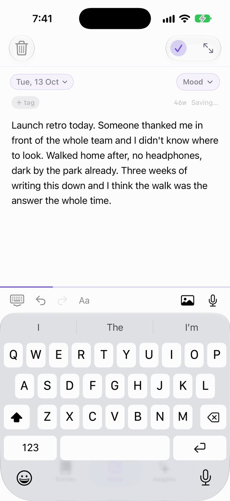
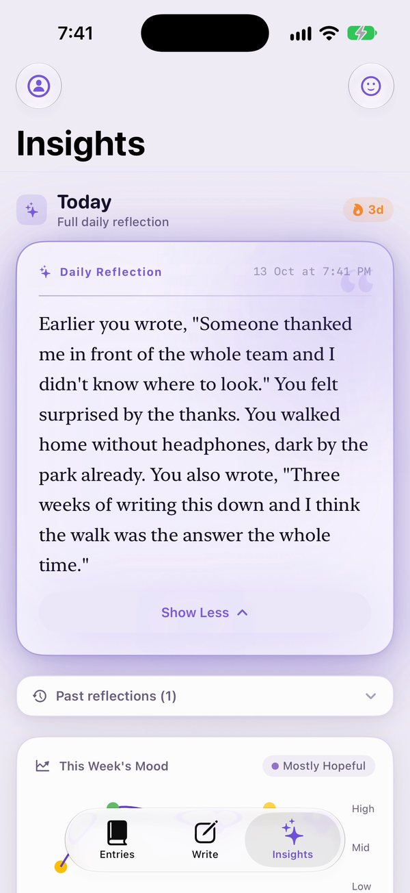
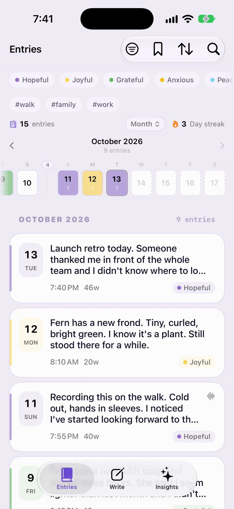
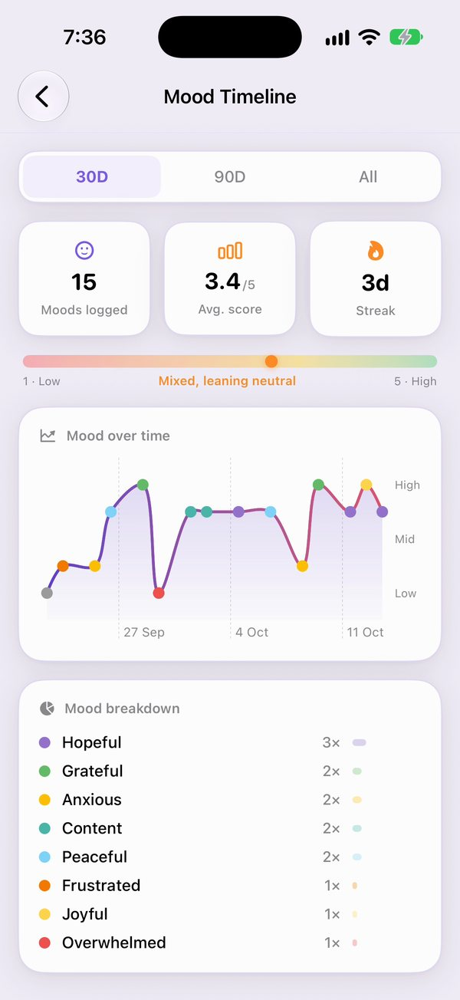
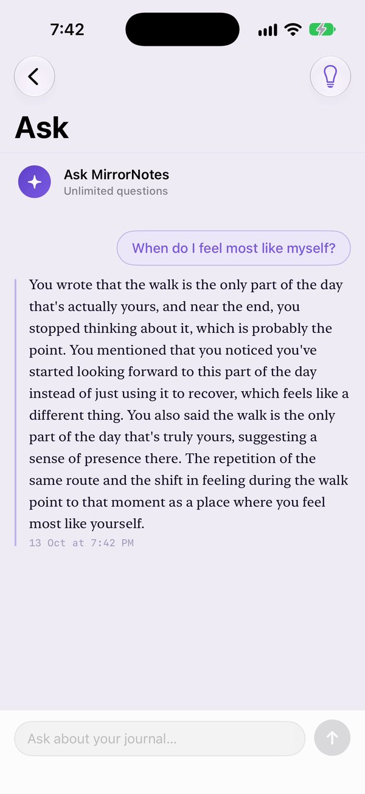
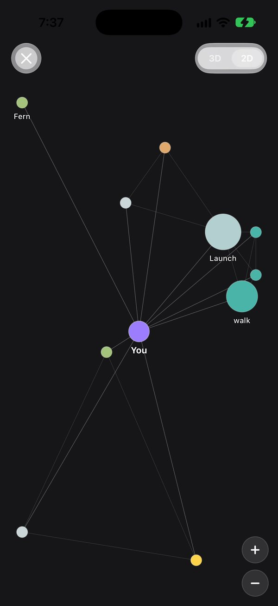
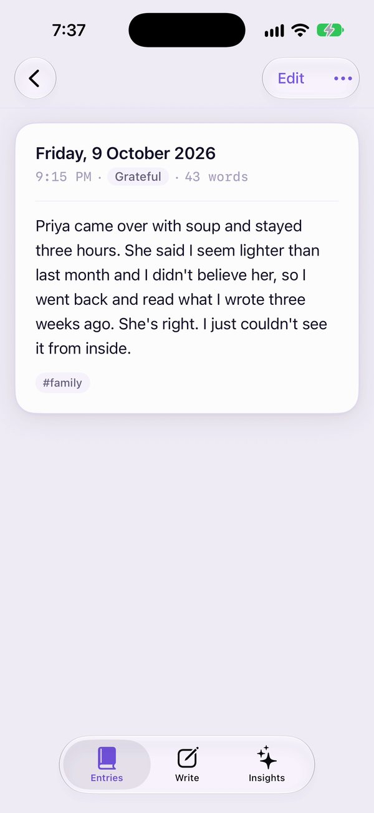

A journal for iPhone and Mac that reads what you wrote and reflects it back in your own words. The AI runs on the phone itself, so your words are never sent anywhere to be read.
You can't try it without an iPhone or a Mac, so this page shows it working: a 77-second recording of the real app, seven screenshots, and a few angles your followers might care about.
The 77-second demo
What happens in it:
A long day gets written down, messy and unedited. A mood is picked from a short list.
Seconds after saving, a reflection appears that opens with a sentence from the entry, word for word, and one line about how the day felt.
Three weeks of entries become a mood timeline.
"When do I feel most like myself?" is answered only from what was written.
Brain View maps the people and themes that keep coming back.
Right-click or long-press the video to save it, or use the file links at the bottom. The journal in the video is a sample written for the demo. The reflection and the answer are the app's real output, generated during the recording. A caption-free, phone-only version (1080 × 2348, without the end card) is in the links at the bottom for your own edits.
Screenshots
Tap "Download PNG" under any of them for the full-resolution 1206 × 2622 original straight from the phone, or get all seven as a zip.

Write. One box. A starting prompt only if you want one. Mood, tags, photos and voice are optional. Download PNG

Daily reflection. It quotes the entry, then says how the day read. Download PNG

Entries. Every day stays readable, searchable and yours. Download PNG

Mood timeline. Thirty days on one line, with the breakdown underneath. Download PNG

Ask. Answers come only from entries you've written. Download PNG

Brain View. The people and themes that keep coming back. Download PNG

An entry. Plain text, a date, a mood, a tag. Nothing else in the way. Download PNG
Why your followers might care
It quotes you. The reflection starts with a line you actually wrote, never a made-up summary. You can always see which sentence it picked.
Private by construction, not by promise. Apple's on-device model does the thinking. It works in airplane mode. There is no account to create and no MirrorNotes server with your diary on it; entries sync only through your own iCloud.
It notices what you can't see from inside. Two-minute entries, three weeks later, turn into a mood line, a map of recurring people and themes, and honest answers to questions about yourself.
Your words stay free, forever. Writing entries and reading your whole history will never cost anything. Every feature, AI included, is free to use right now.
Three ways to post it
Problem firstSome days are too full to carry quietly. MirrorNotes lets you write it down, then reflects it back in your own words, with the AI running entirely on your iPhone. Your words never go to a server to be read. Here's just over a minute of it working.
The one featureThe part of MirrorNotes I didn't expect to like: it quotes you back. "Earlier you wrote, 'Someone thanked me in front of the whole team and I didn't know where to look.'" Then one line about how the day felt. No made-up summary, no cloud.
Three weeks inAfter three weeks of two-minute entries, MirrorNotes starts showing you a shape: a mood line, the people and themes that keep coming back, and answers to "when do I feel most like myself?", all from your own words, all on-device.
Keep these straight
Platforms
iPhone and Mac. On iPhone, the on-device AI uses Apple Intelligence where it's available (iOS 26 on supported iPhones); on other iPhones the app downloads a smaller on-device model once.
Privacy wording
Say "the AI runs on the phone" or "your words never go to a server to be read". Entries do sync between your own devices through your own iCloud account, where Apple stores them and MirrorNotes never sees them, so avoid "nothing ever leaves the phone".
Pricing
Everything is free to use at the moment, and writing and reading entries stays free always. Please don't quote prices or tiers.
What's real
The sample journal was written for the demo. The reflections and answers shown are the app's real output.
Day one
The demo journal already had 15 entries. A new journal needs a few days of writing (about 7 entries) before the AI starts reflecting, so don't promise insight from the very first entry.